Merging satellite-based precipitation datasets with ground observations using RFmerge (>=0.3-0)
Mauricio Zambrano-Bigiarini1
Oscar M. Baez-Villanueva2
Juan Diego Giraldo-Osorio
Ian McNamara
v0.3.1 ; 08 May 2026
Source:vignettes/articles/RFmerge-RainfallExample-full.Rmd
RFmerge-RainfallExample-full.RmdAbout
This vignette updates an earlier tutorial developed for
RFmerge version 0.1-6 and previous releases, which relied
on the now-superseded raster package.
The current workflow uses the terra package and
demonstrates how RFmerge can be used to create an improved
gridded precipitation product by combining satellite-based precipitation
estimates with in situ observations and physically meaningful
covariates, including elevation and distances to rain gauge
stations.
We use the Valparaiso Region in central Chile as a case study. The example shows how to generate a daily merged precipitation product at spatial resolution for January-August 1983. The workflow requires the following inputs:
daily rainfall time series from rain gauges,
metadata describing the spatial coordinates and identifiers of the rain gauges,
the Climate Hazards Group InfraRed Precipitation with Station data version 2.0 (CHIRPSv2),
the Precipitation Estimation from Remotely Sensed Information using Artificial Neural Networks - Climate Data Record (PERSIANN-CDR), and
the Shuttle Radar Topography Mission version 4 (SRTM-v4) digital elevation model (DEM).
In addition, distances from rain gauges to grid cells can be used as
covariates. When requested, these distances are computed internally by
RFmerge from each rain gauge station to every grid cell
within the study area.
Citation
If you find this tutorial useful, please cite it as Zambrano-Bigiarini et al. (2026):
Zambrano-Bigiarini, M.; Baez-Villanueva, O.M.; Giraldo-Osorio, J.D. (2026). Merging satellite-based precipitation datasets with ground observations using RFmerge (>=0.3-0). doi:10.5281/zenodo.20061103.
The theoretical basis of the merging algorithm is described in the following Remote Sensing of Environment article:
Baez-Villanueva, O. M.; Zambrano-Bigiarini, M.; Beck, H.; McNamara, I.; Ribbe, L.; Nauditt, A.; Birkel, C.; Verbist, K.; Giraldo-Osorio, J.D.; Thinh, N.X. (2020). RF-MEP: a novel Random Forest method for merging gridded precipitation products and ground-based measurements, Remote Sensing of Environment, 239, 111610. doi:10.1016/j.rse.2019.111606.
Please also cite the RFmerge R package:
Zambrano-Bigiarini, M.; Baez-Villanueva, O.M., Giraldo-Osorio, J. (2026). RFmerge: Merging of Satellite Datasets with Ground Observations using Random Forests. R package version 0.3-3. URL: https://hzambran.github.io/RFmerge/. doi:10.32614/CRAN.package.RFmerge.
Required RFmerge version
This tutorial was developed for RFmerge >= 0.3-0, the
first release series in which RFmerge is based on the terra package.
All previous RFmerge versions up to 0.1-6 were based on
the superseded raster package.
RFmerge 0.1-6 was removed from CRAN on 2023-02-25 because
issues related to retired spatial dependencies, such as
rgdal, could not be resolved in time.
Installation
Install the latest stable version (from CRAN):
install.packages("RFmerge")Alternatively, you can try the development version from GitHub:
if (!require(devtools)) install.packages("devtools")
library(devtools)
install_github("hzambran/RFmerge")Setting up the R environment
- Load the supporting packages used in this analysis:
- Load
RFmerge, which provides the merging function and the example datasets:
Loading input data
The example uses daily rainfall observations from 34 rain gauges
located in Valparaiso for the period 1983-01-01 to
1983-08-31. These observations are available in the
ValparaisoPPts dataset included with
RFmerge. In an applied study, an equivalent dataset would
typically be read from a CSV file, database export, or zoo
object.
The ValparaisoPPgis dataset contains the identifiers
and spatial coordinates of the rain gauges. The
ValparaisoSHP object represents the polygon used to
define the outer boundary of the study area; in a user application, this
information would commonly be read from a shapefile, GeoPackage, or
another vector format supported by terra.
ValparaisoSHP.fname <- system.file("extdata/ValparaisoSHP.shp",package="RFmerge")
ValparaisoSHP <- terra::vect(ValparaisoSHP.fname)Next, we load the satellite-based precipitation datasets and the static terrain covariate. In this example, CHIRPSv2 (Funk et al., 2015) and PERSIANN-CDR (Ashouri et al., 2015), both at spatial resolution, are used as dynamic covariates; here, dynamic means that the covariate varies through time. The SRTM-v4 DEM, also at spatial resolution, is used as a static covariate to represent the influence of elevation on precipitation; here, static means that the covariate does not vary through time.
chirps.fname <- system.file("extdata/CHIRPS5km.tif" ,package="RFmerge")
prsnncdr.fname <- system.file("extdata/PERSIANNcdr5km.tif" ,package="RFmerge")
dem.fname <- system.file("extdata/ValparaisoDEM5km.tif",package="RFmerge")
CHIRPS5km <- terra::rast(chirps.fname)
PERSIANNcdr5km <- terra::rast(prsnncdr.fname)
ValparaisoDEM5km <- terra::rast(dem.fname) Basic exploratory data analysis
The two multi-band GeoTIFF files provided in the RFmerge
package do not store the date of each precipitation estimate as the name
of the corresponding layer. Before the exploratory analysis, we
therefore assign meaningful layer names to CHIRPS5km and
PERSIANNcdr5km:
#ldates <- hydroTSM::dip("1983-01-01", "1983-08-31")
ldates <- seq(from=as.Date("1983-01-01"), to=as.Date("1983-08-31"), by="days")
names(CHIRPS5km) <- ldates
names(PERSIANNcdr5km) <- ldates We can then inspect the first six rows of the station metadata:
head(ValparaisoPPgis)## Code lon lat NOM_REG NOM_PROV COD_COM NOM_COM
## 1 P5101005 -70.8000 -32.0836 Regin de Valparaso Los Andes 5304 San Esteban
## 2 P5111002 -71.0300 -32.1567 Regin de Valparaso Los Andes 5304 San Esteban
## 3 P5101006 -70.7833 -32.1836 Regin de Valparaso Los Andes 5304 San Esteban
## 4 P5100006 -70.7839 -32.2261 Regin de Valparaso Los Andes 5304 San Esteban
## 5 P5100005 -70.7100 -32.2286 Regin de Valparaso Los Andes 5304 San Esteban
## 6 P5111001 -71.1386 -32.2528 Regin de Valparaso Los Andes 5304 San EstebanThe following plot shows the daily precipitation time series for the first rain gauge station (code: P5101005).
main <- paste("Daily precipitation for the station", ValparaisoPPgis$Code[1])
ylab <- "Precipitation [mm]"
x.ts <- ValparaisoPPts[,1]
#hydroTSM::hydroplot(x.ts, pfreq="o", main=main, ylab= ylab)
plot(x.ts, main=main, ylab= ylab, col="blue")
grid()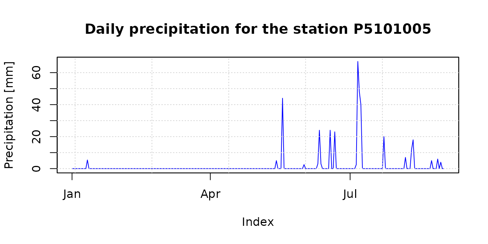
The accumulated precipitation fields for January-August 1983 provide a first visual comparison between CHIRPSv2 and PERSIANN-CDR. The study-area boundary is overlaid to place the gridded estimates in their spatial context:
chirps.total <- sum(CHIRPS5km, na.rm= FALSE)
persiann.total <- sum(PERSIANNcdr5km, na.rm= FALSE)
plot(chirps.total, main = "CHIRPSv2 [Jan - Aug] ",
xlab = "Longitude", ylab = "Latitude",
fun=function() lines(ValparaisoSHP))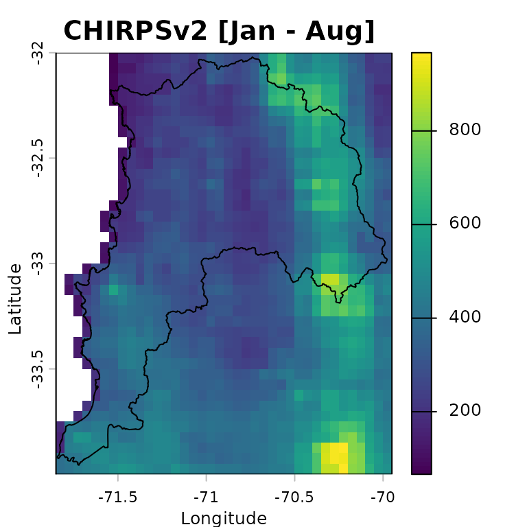
plot(persiann.total, main = "PERSIANN-CDR [Jan - Aug]",
xlab = "Longitude", ylab = "Latitude",
fun=function() lines(ValparaisoSHP))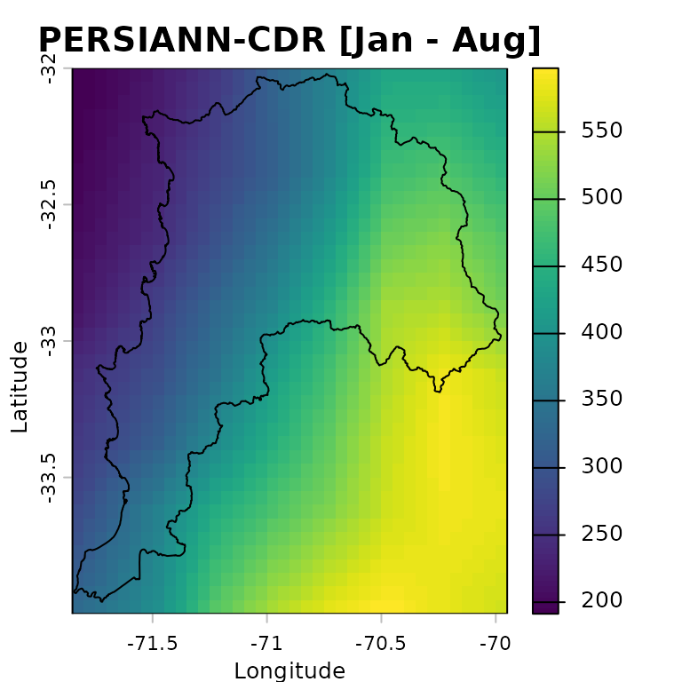
Preparing input data
Spatial metadata
To work with the rain gauge locations as spatial data, we convert the
station metadata stored in ValparaisoPPgis into a
SpatVector. The coordinates are read from the
lon and lat columns of the
ValparaisoPPgis data frame:
We can now plot the DEM together with the rain gauge locations and the study-area boundary. This map is useful for checking whether the station network samples the main elevation gradients across the region:
plot(ValparaisoDEM5km, main="SRTM-v4", xlab="Longitude", ylab="Latitude",
col=terrain.colors(255),
fun=function() {lines(ValparaisoSHP) ;
points(ValparaisoPPgis.vec, pch=16, col="black")
}
)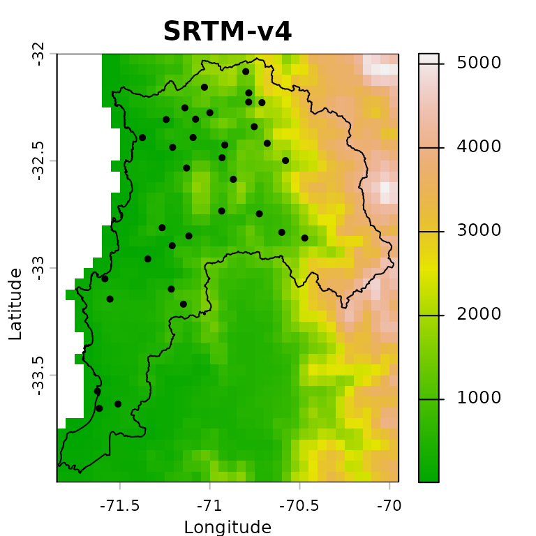
Verification of covariates
This example produces a merged precipitation product for the period
from 1983-01-01 to 1983-08-31, i.e., 243 days. The satellite
precipitation products used as covariates must therefore have 243 layers
each, one for each day in the analysis period. This number must match
the number of rows in ValparaisoPPts.
terra::nlyr(CHIRPS5km)## [1] 243## [1] TRUE## [1] TRUEWe also verify that the precipitation products and the DEM share the same extent, number of rows and columns, coordinate reference system, resolution, and origin:
terra::compareGeom(CHIRPS5km, PERSIANNcdr5km, ValparaisoDEM5km)## [1] TRUEOptional: reprojection into another CRS
When distances are used as covariates in RFmerge
(argument ED=TRUE), it is natural to ask whether the input
layers should first be reprojected from longitude/latitude into a
projected coordinate reference system. RFmerge relies on
distance calculations provided by terra, whose
distance documentation states:
The distance is always expressed in meter if the coordinate reference system is longitude/latitude, and in map units otherwise. Map units are typically meter, but inspect crs(x) if in doubt.
Results are more precise, sometimes much more precise, when using longitude/latitude rather than a planar coordinate reference system, as these distort distance.
Therefore, in contrast to the recommendation used in earlier
RFmerge versions based on the raster package,
we will not reproject the main input datasets before running the
geographical-coordinate example.
Running RFmerge using geographical coordinates
Covariates
To run RFmerge, we first create the covariate object
expected by the function. The covariates are supplied as a list:
covariates<- list(chirps=CHIRPS5km, persianncdr=PERSIANNcdr5km,
dem=ValparaisoDEM5km)The order and names of the covariates in the list are not important.
Setup
The next decision is how many in situ observations will be used to train the random forest model and how many will be held out for independent evaluation.
In this example, 80% of the rain gauge stations are used for training and the remaining 20% are reserved for evaluation:
geoNoPar.drty.out <- file.path(tempdir(), "RFmergeResults_geographical_noparallel")
system.time(rfmep.NoPar.geo <- RFmerge(x=ValparaisoPPts,
cov=covariates,
metadata=ValparaisoPPgis,
id="Code", lat="lat", lon="lon",
mask=ValparaisoSHP,
training=0.8,
seed=1000,
write2disk=TRUE,
drty.out=geoNoPar.drty.out
)
)## [ Creating the training (80%) and evaluation (20%) datasets ... ]## Warning: [vect] guessed crs## [ Computing the Euclidean distances to each observation of the training set ...]## user system elapsed
## 22.075 0.304 22.383The argument seed=1000 is used to make the random forest
training and the station split reproducible.
If the merged files should be written to disk for further inspection
or reuse, set write2disk=TRUE and define the output
directory with drty.out before running
RFmerge.
Running RFmerge using a projected reference system
Reprojection
To assess the sensitivity of the workflow to the coordinate reference system, we repeat the analysis after projecting the inputs to WGS 84 / UTM zone 19S (EPSG:32719):
First, we reproject all gridded covariates:
utmz19s.p4s <- "epsg:32719" # WGS 84 / UTM zone 19S
CHIRPS5km.utm <- terra::project(x=CHIRPS5km , y=utmz19s.p4s)
PERSIANNcdr5km.utm <- terra::project(x=PERSIANNcdr5km , y=utmz19s.p4s)
ValparaisoDEM5km.utm <- terra::project(x=ValparaisoDEM5km, y=utmz19s.p4s)Second, we reproject the in situ rain gauge stations:
ValparaisoPPgis.vec.utm <- terra::project(x=ValparaisoPPgis.vec, y=utmz19s.p4s)Third, we reproject the polygon used to define the study area:
ValparaisoSHP.utm <- terra::project(ValparaisoSHP, y=utmz19s.p4s)Fourth, we create a new data frame with the metadata expected by
RFmerge, i.e., at least the station ID and two coordinate
columns. In this projected example, the column names lon
and lat are retained for compatibility with the function
arguments, although they now contain easting and northing
coordinates:
id <- ValparaisoPPgis.vec.utm[["Code"]][,1]
st.coords <- terra::crds(ValparaisoPPgis.vec.utm)
lon <- st.coords[, "x"]
lat <- st.coords[, "y"]
ValparaisoPPgis.utm <- data.frame(Code=id, lon=lon, lat=lat)Covariates
We now create the covariate list to be used by RFmerge
in the projected-coordinate example:
covariates.utm <- list(chirps=CHIRPS5km.utm, persianncdr=PERSIANNcdr5km.utm,
dem=ValparaisoDEM5km.utm)The order and names of the covariates in the list are not important.
Setup
To obtain results comparable with the geographical-coordinate run, we use the same 80% training and 20% evaluation split, controlled by the same random seed:
utmNoPar.drty.out <- file.path(tempdir(), "RFmergeResults_utm_noparallel")
system.time(rfmep.NoPar.utm <- RFmerge(x=ValparaisoPPts,
cov=covariates.utm,
metadata=ValparaisoPPgis.utm,
id="Code", lat="lat", lon="lon",
mask=ValparaisoSHP.utm,
training=0.8,
seed=1000,
write2disk=TRUE,
drty.out=utmNoPar.drty.out
)
)## [ Creating the training (80%) and evaluation (20%) datasets ... ]## [ Computing the Euclidean distances to each observation of the training set ...]## user system elapsed
## 19.860 0.098 19.961Running RFmerge using the parallel
argument
One of the main advantages of moving RFmerge from the
superseded raster package to terra is the
substantial improvement in computational speed.
For larger applications, or when working on a multicore machine or
computing cluster, additional speed gains can be obtained through the
parallel argument in RFmerge.
First, define the maximum number of cores or nodes to use in the parallel computations:
ncores.nmax <- 10 # maximum amount of cores the user wants to useNext, detect whether the operating system is Windows and set the
parallel argument accordingly:
onWin <- ( (R.version$os=="mingw32") | (R.version$os=="mingw64") )
ifelse(onWin, parallel <- "parallelWin", parallel <- "parallel")## [1] "parallel"Then, select a safe number of cores by comparing the user-defined
maximum (ncores.nmax) with the number of cores available in
the current environment (parallel::detectCores()). The
following code also avoids invalid values when
detectCores() returns NA or only one available
core:
( ncores.available <- parallel::detectCores() )## [1] 4
if (is.na(ncores.available)) ncores.available <- 2
( par.nnodes <- max(1, min(ncores.available - 1, ncores.nmax) ) )## [1] 3We can now run RFmerge with parallel processing, using
at most ncores.nmax cores:
geoPar.drty.out <- file.path(tempdir(), "RFmergeResults_geographical_parallel")
system.time(rfmep.Par.geo <- RFmerge(x=ValparaisoPPts,
cov=covariates,
metadata=ValparaisoPPgis,
id="Code", lat="lat", lon="lon",
mask=ValparaisoSHP,
training=0.8,
seed=1000,
write2disk=TRUE,
drty.out=geoPar.drty.out,
parallel=parallel, par.nnodes=par.nnodes
)
)## [ Creating the training (80%) and evaluation (20%) datasets ... ]## Warning: [vect] guessed crs## [ Computing the Euclidean distances to each observation of the training set ...]## [ Parallelisation finished ! ]## user system elapsed
## 41.037 1.334 18.523
RFmerge outputs
If RFmerge runs successfully and
write2disk=TRUE, the following outputs are stored in the
user-defined drty.out directory:
the rain gauge stations used for training and evaluation; and
the final merged product, written as individual GeoTIFF files.
These outputs are organized within drty.out as
follows:
Ground_based_data/Training/: stores the time series and metadata used to train RF-MEP as azoofile (Training_ts.txt) and a text file (Training_metadata.txt), respectively.Ground_based_data/Evaluation/: stores the time series and metadata withheld from model training and used for independent evaluation. TheEvaluation_ts.txtandEvaluation_metadata.txtfiles are stored aszooand CSV files, respectively.RF-MEP/: stores the individual GeoTIFF files produced by the RF-MEP algorithm, using the same spatial resolution as the selected covariates.
Evaluation of RFmerge using geographical
coordinates
Reading RFmerge outputs
To evaluate the outputs obtained with RFmerge in
geographical coordinates, we use the rain gauge
observations withheld from model training.
For this purpose, we import the time series and metadata from the evaluation stations and convert the station metadata into a spatial object:
ts.path <- file.path(geoNoPar.drty.out, "Ground_based_data/Evaluation/Evaluation_ts.txt")
metadata.path <- file.path(geoNoPar.drty.out, "Ground_based_data/Evaluation/Evaluation_metadata.txt")
eval.ts <- read.zoo(ts.path, header = TRUE)
eval.gis <- read.csv(metadata.path)
# Promote 'eval.gis' to a spatial object so it can be plotted.
( eval.gis.vec <- terra::vect(eval.gis, geom=c("lon", "lat")) )## Warning: [vect] guessed crs## class : SpatVector
## geometry : points
## dimensions : 7, 5 (geometries, attributes)
## extent : -71.5553, -70.7247, -33.145, -32.1567 (xmin, xmax, ymin, ymax)
## coord. ref. : +proj=longlat +datum=WGS84 +no_defs
## names : Code NOM_REG NOM_PROV COD_COM NOM_COM
## type : <chr> <chr> <chr> <int> <chr>
## values : P5111002 Regin de Valparaso Los Andes 5304 San Esteban
## P5120003 Regin de Valparaso Los Andes 5304 San Esteban
## P5210002 Regin de Valparaso Los Andes 5304 San Esteban
## ...Basic plotting of RFmerge outputs for a single day
First, define the colours and precipitation classes used in the subsequent plots:
minmax(rfmep.NoPar.geo[[11]]) # range of values to be plotted## 1983-01-11
## min 0.34209
## max 12.60838
breaks <- c(0, 2, 4, 6, 8, 10, 12, 15, 20) # 8 categories for the precipitation values
colors <- RColorBrewer::brewer.pal(n=8, "YlGnBu") # 8 coloursThe following plot provides a basic visualisation of RF-MEP precipitation for one day, 1983-01-11, with the study-area boundary and evaluation stations overlaid:
plot(rfmep.NoPar.geo[[11]],
main="RF-MEP precipitation for 1983-01-11",
xlab="Longitude", ylab="Latitude",
breaks=breaks, col=colors
)
lines(ValparaisoSHP, col="black")
points(eval.gis.vec, pch = 18)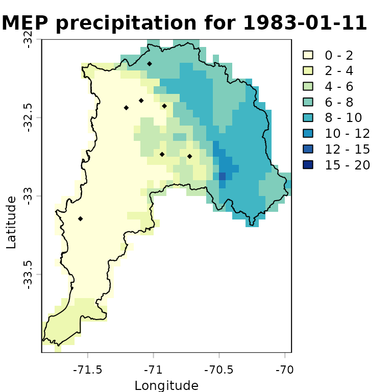
Advanced plotting of RFmerge outputs for a single
day
For a more informative comparison, we can plot the evaluation-station observations using the same precipitation classes and colour palette as the RF-MEP raster:
stations.vals <- as.numeric(eval.ts[11,])
stations.colors <- cut(stations.vals, breaks=breaks,
labels=colors, include.lowest=TRUE)
stations.colors <- as.character(stations.colors) # Convert factors to colour stringsWe then overlay the study-area boundary and colour the evaluation stations using the same palette as the merged product. This allows a quick visual check of how closely the RF-MEP field agrees with observations that were not used during training.
plot(rfmep.NoPar.geo[[11]],
main="RF-MEP precipitation for 1983-01-11",
xlab="Longitude", ylab="Latitude",
breaks=breaks, col=colors,
plg = list(title = "P, [mm]")
)
lines(ValparaisoSHP, col="black")
# Adding labels from a specific column in the SpatVector
# -) labels: The name of the column in your SpatVector containing the text
# you want to display.
# -) halo : Set to TRUE to add a buffer around the text, making it more
# readable against complex raster backgrounds.
# -) pos : Determines the position relative to the point
# (1=below, 2=left, 3=above, 4=right).
points(eval.gis.vec, pch = 23, # Diamond with fill and border
bg = stations.colors, # Fill colour
col = "black", # Border (outline) colour
cex=0.9)
text(eval.gis.vec, labels="Code", halo=TRUE, pos=3, cex=0.4, col="black")
text(eval.gis.vec, label=paste(stations.vals, "mm"),
halo=TRUE, pos=1, cex=0.4, col="black")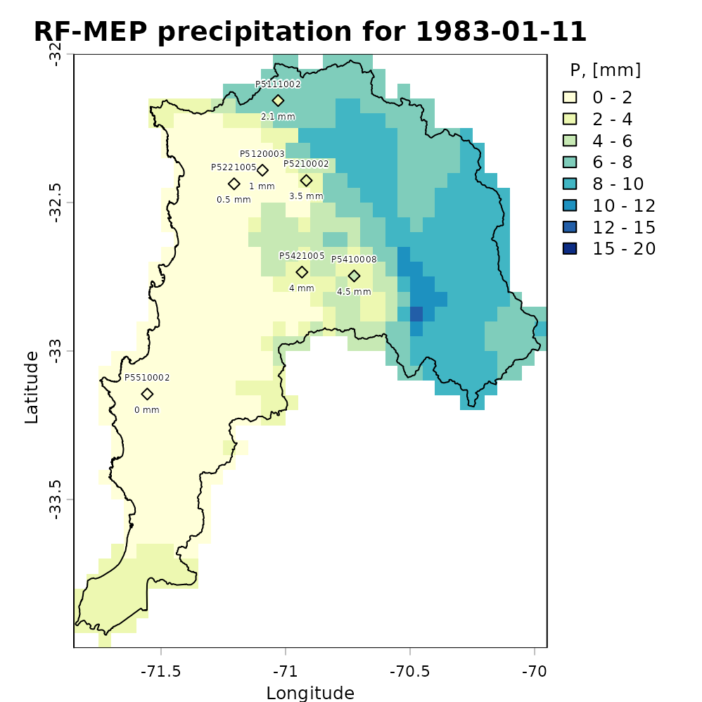
Plotting the total amount of precipitation
The following map shows accumulated RF-MEP precipitation over Valparaiso for January-August 1983, with the study-area boundary overlaid:
rfmep.total <- sum(rfmep.NoPar.geo, na.rm= FALSE)
plot(rfmep.total, main = "RF-MEP [Jan - Aug]",
xlab = "Longitude", ylab = "Latitude")
lines(ValparaisoSHP, lwd=1.5)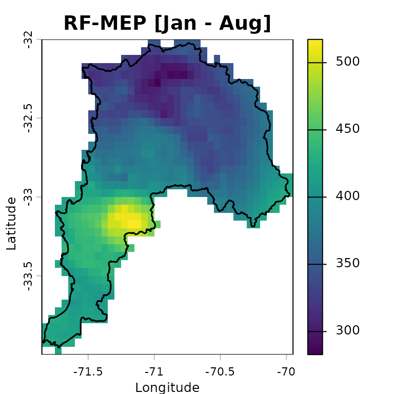
Numeric assessment of RFmerge effectiveness
We evaluate the merged product obtained with RFmerge in
geographical coordinates, hereafter RF-MEP, together
with the two satellite precipitation products used as covariates. All
products are compared against the in situ rain gauge observations in the
evaluation set.
To extract gridded precipitation values at the rain gauge locations,
we use the extract function from terra:
## Warning: [vect] guessed crs
rfmep.NoPar.geo.ts <- t(terra::extract(rfmep.NoPar.geo, eval.gis.vec))
chirps.ts <- t(terra::extract(CHIRPS5km , eval.gis.vec))
persiann.ts <- t(terra::extract(PERSIANNcdr5km, eval.gis.vec))The output of terra::extract includes an ID column for
the extracted points. After transposition, this becomes the first row,
which must be removed before comparing the extracted precipitation time
series with the observed gauge records:
rfmep.NoPar.geo.ts <- rfmep.NoPar.geo.ts[-1, ]
chirps.ts <- chirps.ts[-1, ]
persiann.ts <- persiann.ts[-1, ]To evaluate the performance of RF-MEP and the two satellite products in geographical coordinates, we use the Nash-Sutcliffe efficiency (NSE), as implemented in the hydroGOF R package. NSE ranges from negative infinity to one, with an optimal value of 1.
sres <- list(chirps.ts, persiann.ts, rfmep.NoPar.geo.ts)
nsres <- length(sres)
nstations <- ncol(eval.ts)
tmp <- rep(NA, nstations)
nse.table.NoPar.geo <- data.frame(ID=eval.gis[["Code"]],
CHIRPS=tmp,
PERSIANN_CDR=tmp,
RF_MEP=tmp)
# Compute NSE between observed rainfall at the evaluation gauges and each
# gridded product: CHIRPSv2, PERSIANN-CDR, and RF-MEP.
for (i in 1:nsres) {
ldates <- time(eval.ts)
lsim <- zoo(sres[[i]], ldates)
nse.table.NoPar.geo[, (i+1)] <- round( hydroGOF::NSE(sim= lsim, obs= eval.ts,
na.rm=TRUE), 3 )
} # FOR end
# Show the final performance table for all products.
nse.table.NoPar.geo## ID CHIRPS PERSIANN_CDR RF_MEP
## 1 P5111002 0.055 0.279 0.842
## 2 P5120003 -0.101 0.333 0.951
## 3 P5210002 0.166 0.378 0.934
## 4 P5221005 -0.451 0.089 0.853
## 5 P5421005 -1.516 0.255 0.637
## 6 P5410008 -0.167 0.373 0.863
## 7 P5510002 0.054 0.173 0.791Graphical assessment of RFmerge effectiveness
Finally, we create a boxplot comparing the NSE performance of the merged product with the original satellite rainfall estimates used as covariates:
# Boxplot for graphical comparison.
sres.cols <- c("powderblue", "palegoldenrod", "mediumseagreen")
boxplot(nse.table.NoPar.geo[,2:4],
main = "Daily NSE evaluation for Jan - Aug 1983 \n using geographical coordinates",
xlab = "Precipitation products", ylab = "NSE", ylim = c(-0.5, 1),
col=sres.cols)
legend("topleft", legend=c("CHIRPS", "PERSIANN-CDR", "RF-MEP"),
col=sres.cols, pch=15, cex=1.5, bty="n")
grid()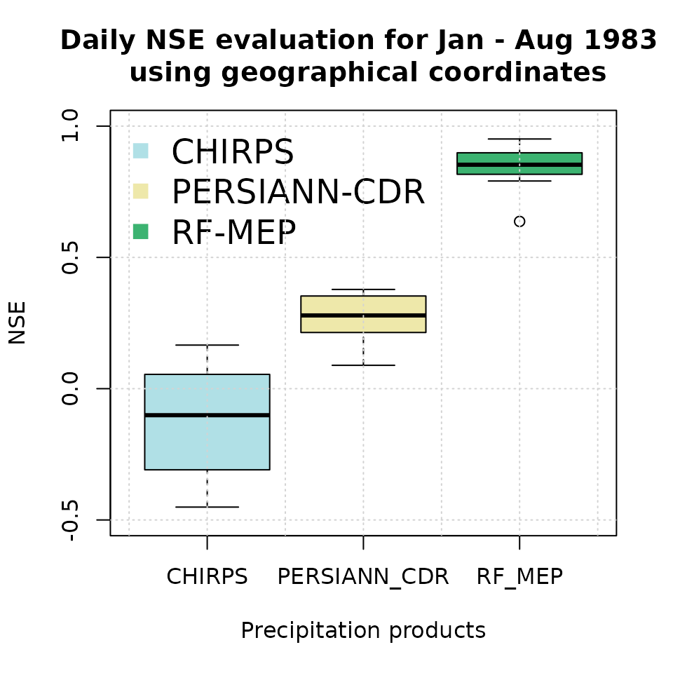
Higher NSE values indicate stronger agreement with the withheld rain gauge observations. In applications with sparse or uneven station networks, this summary should be interpreted together with spatial diagnostics, because a high aggregate score can still hide local errors in complex terrain or coastal transition zones.
Evaluation of RFmerge using projected coordinates
Reading RFmerge outputs
To evaluate the outputs obtained with RFmerge in
projected (UTM) coordinates, we again use the rain
gauge observations withheld from model training.
We import the evaluation time series and metadata, then convert the station metadata into a projected spatial object:
ts.path <- file.path(utmNoPar.drty.out, "Ground_based_data/Evaluation/Evaluation_ts.txt")
metadata.path <- file.path(utmNoPar.drty.out, "Ground_based_data/Evaluation/Evaluation_metadata.txt")
eval.ts <- read.zoo(ts.path, header = TRUE)
eval.gis.utm <- read.csv(metadata.path)
# Promote 'eval.gis.utm' to a spatial object so it can be plotted.
( eval.gis.vec.utm <- terra::vect(eval.gis.utm, geom=c("lon", "lat"), crs=utmz19s.p4s ) )## class : SpatVector
## geometry : points
## dimensions : 7, 1 (geometries, attributes)
## extent : 261653.7, 338417.6, 6329731, 6440390 (xmin, xmax, ymin, ymax)
## coord. ref. : WGS 84 / UTM zone 19S (EPSG:32719)
## names : Code
## type : <chr>
## values : P5111002
## P5120003
## P5210002
## ...Basic plotting of RFmerge outputs for a single day
First, define the colours and precipitation classes used in the subsequent plots:
minmax(rfmep.NoPar.utm[[11]]) # range of values to be plotted## 1983-01-11
## min 0.4933442
## max 12.8569300
breaks <- c(0, 2, 4, 6, 8, 10, 12, 15, 20) # 8 categories for the precipitation values
colors <- RColorBrewer::brewer.pal(n=8, "YlGnBu") # 8 coloursThe following plot provides a basic visualisation of RF-MEP precipitation for one day, 1983-01-11, with the projected study-area boundary and evaluation stations overlaid:
plot(rfmep.NoPar.utm[[11]],
main="RF-MEP precipitation for 1983-01-11",
xlab="Easting", ylab="Northing",
breaks=breaks, col=colors
)
lines(ValparaisoSHP.utm, col="black")
points(eval.gis.vec.utm, pch = 18)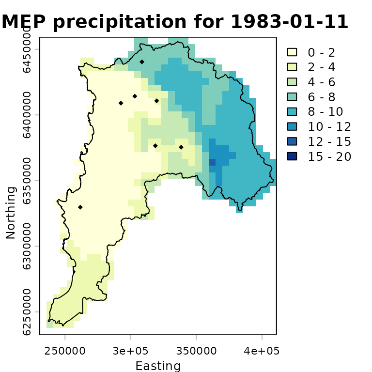
Advanced plotting of RFmerge outputs for a single
day
For a more informative comparison, we plot the evaluation-station observations using the same precipitation classes and colour palette as the RF-MEP raster:
stations.vals <- as.numeric(eval.ts[11,])
stations.colors <- cut(stations.vals, breaks=breaks,
labels=colors, include.lowest=TRUE)
stations.colors <- as.character(stations.colors) # Convert factors to colour stringsWe then overlay the study-area boundary and colour the evaluation stations using the same palette as the merged product. This allows a quick visual check of how closely the projected-coordinate RF-MEP field agrees with observations that were not used during training.
plot(rfmep.NoPar.utm[[11]],
main="RF-MEP precipitation for 1983-01-11",
xlab="Easting", ylab="Northing",
breaks=breaks, col=colors,
plg = list(title = "P, [mm]")
)
lines(ValparaisoSHP.utm, col="black")
# Adding labels from a specific column in the SpatVector
# -) labels: The name of the column in your SpatVector containing the text
# you want to display.
# -) halo : Set to TRUE to add a buffer around the text, making it more
# readable against complex raster backgrounds.
# -) pos : Determines the position relative to the point
# (1=below, 2=left, 3=above, 4=right).
points(eval.gis.vec.utm, pch = 23, # Diamond with fill and border
bg = stations.colors, # Fill colour
col = "black", # Border (outline) colour
cex=0.9)
text(eval.gis.vec.utm, labels="Code", halo=TRUE, pos=3, cex=0.4, col="black")
text(eval.gis.vec.utm, label=paste(stations.vals, "mm"),
halo=TRUE, pos=1, cex=0.4, col="black")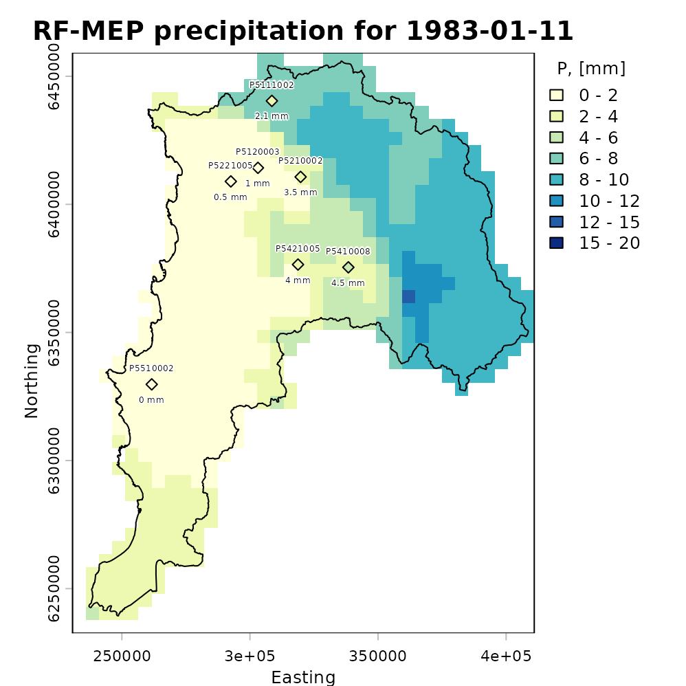
Plotting the total amount of precipitation
The following map shows accumulated RF-MEP precipitation over Valparaiso for January-August 1983 in the projected-coordinate run, with the study-area boundary overlaid:
rfmep.total.utm <- sum(rfmep.NoPar.utm, na.rm= FALSE)
plot(rfmep.total.utm, main = "RF-MEP [Jan - Aug]",
xlab = "Easting", ylab = "Northing")
lines(ValparaisoSHP.utm, lwd=1.5)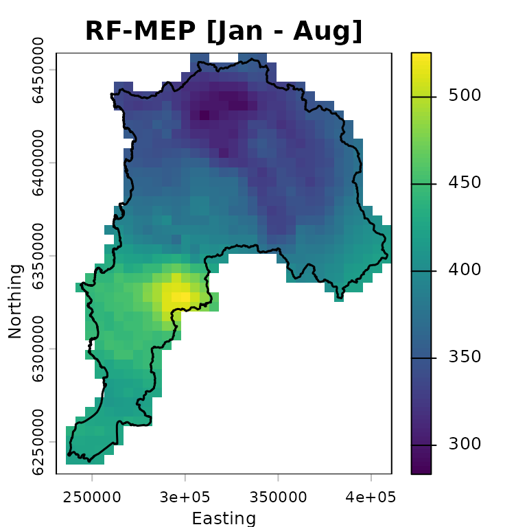
Numeric assessment of RFmerge effectiveness
We evaluate the merged product obtained with RFmerge in
projected coordinates, hereafter RF-MEP, together with
the two satellite precipitation products used as covariates. All
products are compared against the in situ rain gauge observations in the
evaluation set.
To extract gridded precipitation values at the rain gauge locations,
we use the extract function from terra:
rfmep.NoPar.utm.ts <- t(terra::extract(rfmep.NoPar.utm , eval.gis.vec.utm))
chirps.ts.utm <- t(terra::extract(CHIRPS5km.utm , eval.gis.vec.utm))
persiann.ts.utm <- t(terra::extract(PERSIANNcdr5km.utm, eval.gis.vec.utm))The output of terra::extract includes an ID column for
the extracted points. After transposition, this becomes the first row,
which must be removed before comparing the extracted precipitation time
series with the observed gauge records:
rfmep.NoPar.utm.ts <- rfmep.NoPar.utm.ts[-1, ]
chirps.ts.utm <- chirps.ts.utm[-1, ]
persiann.ts.utm <- persiann.ts.utm[-1, ]To evaluate the performance of RF-MEP and the two satellite products in projected coordinates, we use the Nash-Sutcliffe efficiency (NSE), as implemented in the hydroGOF R package. NSE ranges from negative infinity to one, with an optimal value of 1.
sres <- list(chirps.ts.utm, persiann.ts.utm, rfmep.NoPar.utm.ts)
nsres <- length(sres)
nstations <- ncol(eval.ts)
tmp <- rep(NA, nstations)
nse.table.NoPar.utm <- data.frame(ID=eval.gis.utm[["Code"]],
CHIRPS=tmp,
PERSIANN_CDR=tmp,
RF_MEP=tmp)
# Compute NSE between observed rainfall at the evaluation gauges and each
# gridded product: CHIRPSv2, PERSIANN-CDR, and RF-MEP.
for (i in 1:nsres) {
ldates <- time(eval.ts)
lsim <- zoo(sres[[i]], ldates)
nse.table.NoPar.utm[, (i+1)] <- round( hydroGOF::NSE(sim= lsim, obs= eval.ts,
na.rm=TRUE), 3 )
} # FOR end
# Show the final performance table for all products.
nse.table.NoPar.utm## ID CHIRPS PERSIANN_CDR RF_MEP
## 1 P5111002 0.009 0.283 0.832
## 2 P5120003 -0.052 0.338 0.950
## 3 P5210002 0.178 0.384 0.932
## 4 P5221005 -0.549 0.091 0.860
## 5 P5421005 -0.386 0.248 0.615
## 6 P5410008 0.129 0.370 0.838
## 7 P5510002 0.041 0.182 0.788Graphical assessment of RFmerge effectiveness
Finally, we create a boxplot comparing the NSE performance of the merged product with the original satellite rainfall estimates used as covariates:
# Boxplot for graphical comparison.
sres.cols <- c("powderblue", "palegoldenrod", "mediumseagreen")
boxplot(nse.table.NoPar.utm[,2:4],
main = "Daily NSE evaluation for Jan - Aug 1983 \n using projected coordinates",
xlab = "Precipitation products", ylab = "NSE", ylim = c(-0.5, 1),
col=sres.cols)
legend("topleft", legend=c("CHIRPS", "PERSIANN-CDR", "RF-MEP"),
col=sres.cols, pch=15, cex=1.5, bty="n")
grid()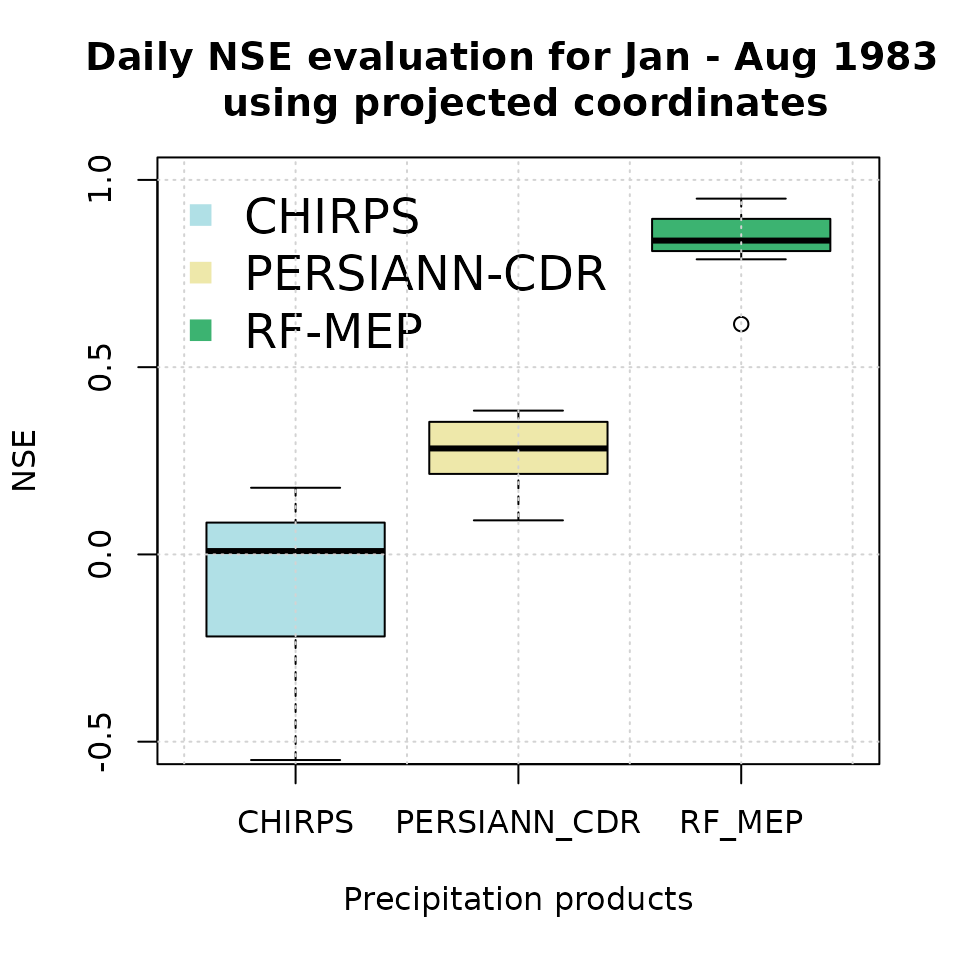
This second evaluation is useful for checking whether reprojection
materially changes the merged product or the extracted values at station
locations. In practice, the geographical-coordinate workflow is usually
preferable for distance calculations in terra, but a
projected-coordinate comparison can be helpful when a project requires
consistency with existing GIS layers or regional modelling
workflows.
Software details
This tutorial was built under:
## [1] "x86_64-pc-linux-gnu"## [1] "R version 4.6.0 (2026-04-24)"## [1] "RFmerge 0.3-4"## [1] "terra 1.9-25"## [1] "hydroGOF 0.7-0"## [1] "RColorBrewer 1.1-3"Version history
-) v0.3.1: 07-May-2026
-) v0.3 : 06-May-2026
-) v0.2 : 12-May-2023 (not publicly released)
-) v0.1 : 07-Jan-2020
References
Ashouri, H., Hsu, K.-L., Sorooshian, S., Braithwaite, D. K., Knapp, K. R., Cecil, L. D., Nelson, B. R., and Prat, O. P. (2015). PERSIANN-CDR: Daily Precipitation Climate Data Record from Multisatellite Observations for Hydrological and Climate Studies, Bulletin of the American Meteorological Society, 96, 69–83, doi:10.1175/BAMS-D-13-00068.1.
Baez-Villanueva, O. M.; Zambrano-Bigiarini, M.; Beck, H.; McNamara, I.; Ribbe, L.; Nauditt, A.; Birkel, C.; Verbist, K.; Giraldo-Osorio, J.D.; Thinh, N.X. (2020). RF-MEP: a novel Random Forest method for merging gridded precipitation products and ground-based measurements, Remote Sensing of Environment, 239, 111610. doi:10.1016/j.rse.2019.111606. https://doi.org/10.1016/j.rse.2019.111606.
Funk, C., Peterson, P., Landsfeld, M., Pedreros, D., Verdin, J., Shukla, S., Husak, G., Rowland, J., Harrison, L., Hoell, A., and Michaelsen, J. (2015) The climate hazards infrared precipitation with stations-a new environmental record for monitoring extremes, Sci Data, 2, 150 066, doi:10.1038/sdata.2015.66.
Hengl, T., Nussbaum, M., Wright, M. N., Heuvelink, G. B., & Gr"{a}ler, B. (2018). Random forest as a generic framework for predictive modeling of spatial and spatio-temporal variables. PeerJ, 6, e5518. doi:10.7717/peerj.5518. https://doi.org/10.7717/peerj.5518.